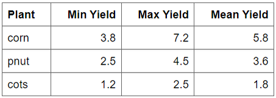
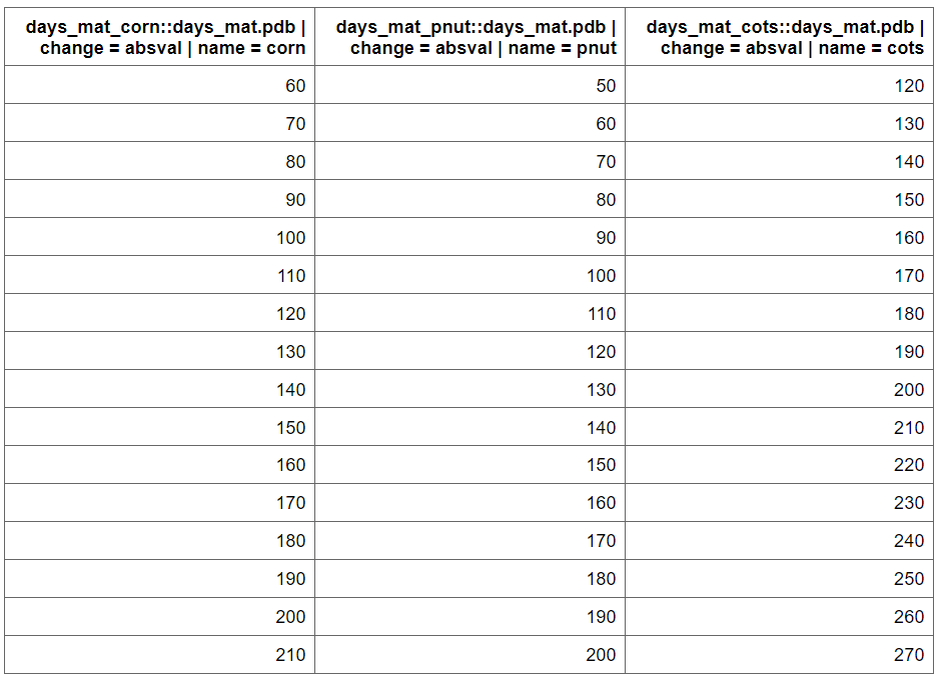
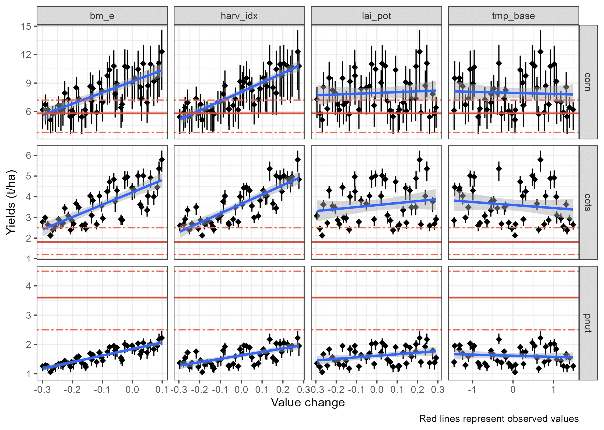

Crop Yields
Soft calibration workflow for crop yields in SWAT+ models
Source:vignettes/sc-crops.Rmd
sc-crops.RmdIntroduction
The SWATtunR package provides a structured approach to soft calibration of crop parameters, aiming to align SWAT+ simulations with observed crop yields. This process is detailed in a template script, initially developed under the EU project OPTAIN and documented in its deliverables, where its application across various European case studies is explored. The calibration is a two-stage routine designed to be tailored to individual SWAT projects. First, it adjusts the days to maturity for each crop to match its characteristics and management schedules. Subsequently, additional crop parameters can be fine-tuned if necessary to achieve accurate yield simulations, ensuring a robust and reproducible calibration process.
Workflow
In your created soft calibration directory with the
initialize_softcal() function, the
workflow/01_crops_calibration.R script file is included.
This script serves as a starting point, providing a customizable
template to guide users through the crop soft calibration process
effectively.
Following the steps outlined in this page comes from the script, users can adapt the calibration routine to their specific SWAT+ model setup and observed data. The script is designed to be flexible, allowing for modifications based on the unique characteristics of the crops being modeled and the management practices in place.

1. Load packages, settings and yield data
The SWATtunR package is essential for soft calibration, as it provides the necessary functions for the calibration process. Additional packages are required for data manipulation, visualization, SWAT+ model runs, etc. Example here is provided using SWAT+ model setup provided by SWATdata package, but the workflow can be applied to any SWAT+ project.
## Required libraries to run workflow
library(SWATtunR)
library(SWATrunR)
library(tidyverse)
library(tibble)
library(purrr)
# Parameter definition ----------------------------------------------------
# Path to the SWAT+ project folder.
model_path <- 'test/swatplus_rev60_demo'
# Set the number of cores for parallel model execution
n_cores <- Inf # Inf uses all cores. Set lower value if preferred.
# Set the number parameter combinations for the LHS sampling of crop parameters
n_combinations <- 10
# Path to the observed crop yields.
# This file must be updated with case study specific records!
yield_obs_path <- './observation/crop3.csv'
# Load and prepare data ---------------------------------------------------
# Load the yield observations
yield_obs <- read.csv(yield_obs_path)
# Define the crops which should be used in the calibration.
# Default is all crops which are defined in yield_obs.
# Please define manually if only selected crops should be considered.
crop_names <- yield_obs$plant_name
# Optional reset of plants.plt --------------------------------------------
# In the case the crop calibration workflow should be redone after the last step
# of this script was already executed and the plants.plt was overwritten the
# plants.plt should be reset to its initial condition. To perform the reset set
# reset <- TRUE
reset <- FALSE
if(reset) {
file.copy('./backup/plants.plt',
paste0(model_path, '/plants.plt'),
overwrite = TRUE)
} else if (!file.exists('./backup/plants.plt')){
file.copy(paste0(model_path, '/plants.plt'),
'./backup/plants.plt',
overwrite = FALSE)
}In your case the crop yield information is quite simple.

2. Generate days_mat parameter set
The days to maturity (days_mat) determine how quickly or
slowly a crop develops in a SWAT+ model, as it is converted into the
heat units required for a crop to fully mature. To ensure the crop
behaves as intended, the days_mat value must align with the defined
management operations schedule. To identify suitable days_mat values for
selected crops, a parameter set is created where the
days_mat value with sample_day_mat() function
for each crop is varied within a range (change_min, change_max) using
fixed intervals (change_step).
par_dmat <- sample_days_mat(crop_names)par_dmat is a data frame containing the
days_mat values for each crop, which will be used in the
calibration process. plants.plt file is used to get initial
values The function sample_days_mat() generates a range of
values based on the defined parameters.

3. Run model for parameter set
The next step is to run the SWAT+ model with the generated
days_mat parameter set. The run_swatplus
function from SWATrunR package executes the model
simulations for each combination of parameters in par_dmat.
The results are stored in simulation folder, which can be
used for further analysis. The folder will include a timestamp to
distinguish each run. When the process is repeated, the analysis will
automatically use the most recent set of simulation results.
# Run the SWAT+ model with the generated days_mat parameter set
run_swatplus(project_path = model_path,
output = list(yld = define_output(file = 'mgtout',
variable = 'yld',
label = crop_names),
bms = define_output(file = 'mgtout',
variable = 'bioms',
label = crop_names),
phu = define_output(file = 'mgtout',
variable = 'phu',
label = crop_names)
),
parameter = par_dmat,
start_date = NULL, # Change if necessary.
end_date = NULL, # Change if necessary.
years_skip = NULL, # Change if necessary.
n_thread = n_cores,
save_path = './simulation',
save_file = add_timestamp('sim_dmat'),
return_output = FALSE,
time_out = 3600 # seconds, change if run-time differs
)4. Plot and select days_mat parameters
After the running the model it is important to load the results and
visualize the crop yields, PHU fractions at harvest, biomass to assess
the performance of the model with the different days_mat
values. The load_swat_run function from the
SWATrunR package is used to load the most recent
simulation results from the simulation folder. The
plot_phu_yld_bms() function is then used to visualize the
crop yields for each crop and days_mat value.
# Load the most recent dmat simulation results
dmat_sims <- list.files('./simulation/', pattern = '[0-9]{12}_sim_dmat')
dmat_path <- paste0('./simulation/', dmat_sims[length(dmat_sims)])
ylds_phu_dmat <- load_swat_run(dmat_path, add_date = FALSE)
# Plot PHU, crop yields and biomass over adjusted days to maturity values.
plot_phu_yld_bms(ylds_phu_dmat, yield_obs)
From this figure you can select the days_mat values for
each crop that fall within PHU correct interval 1 - 1.2 and the best
match the observed yields. The selected values are saved with this code
snippet as dmat_sel and will be used in the next step.
# Set days to maturity values for all selected crops based on the figure above.
dmat_sel <- tibble(
plant_name = c('corn', 'cots', 'pnut'),
'days_mat.pdb | change = absval' = c(140, 160, 160))
# Check if user defined days to maturity values for all crops.
stopifnot(all(crop_names %in% dmat_sel$plant_name))
# Update names of dmat_sel to be used as SWATrunR parameters
dmat_sel <- prepare_plant_parameter(dmat_sel)5. Add additional parameters
In addition to days_mat, you can also adjust other
parameters such as leaf area index (lai_pot), harvest index
(harv_idx), base temperature for plant growth
(tmp_base), and biomass energy ratio (bm_e).
These parameters can be adjusted in a similar way as
days_mat by creating a parameter set with the
sample_lhs() function. When making these updates, it is
important to ensure that the resulting values remain realistic and
biologically meaningful—for example, avoiding negative values or ranges
that fall outside plausible agronomic limits.
par_bnd <- tibble('lai_pot.pdb | change = relchg' = c(-0.3, 0.3),
'harv_idx.pdb | change = relchg' = c(-0.3, 0.3),
'tmp_base.pdb | change = abschg' = c(-1.5, 1.5),
'bm_e.pdb | change = relchg' = c(-0.3, 0.1))
## The number of samples can be adjusted based on the available computational resources.
## Recommended number of samples is 50-100.
par_crop <- sample_lhs(par_bnd, n_combinations)
# Add updated days to maturity values to parameter set
par_crop <- bind_cols(par_crop, dmat_sel)6. Run model for additional parameter set
With all parameters defined, you can now run the SWAT+ model again
using the run_swatplus function. This will execute the
model simulations for each combination of parameters in
par_bnd, and the results will be stored in the
./simulation folder.
# Run the SWAT+ model with the additional parameter set
run_swatplus(project_path = model_path,
output = list(yld = define_output(file = 'mgtout',
variable = 'yld',
label = crop_names)),
parameter = par_crop,
start_date = NULL, # Change if necessary.
end_date = NULL, # Change if necessary.
years_skip = NULL, # Change if necessary.
n_thread = n_cores,
save_path = './simulation',
save_file = add_timestamp('sim_yld'),
return_output = FALSE,
time_out = 3600 # seconds, change if run-time differs
)7. Plot and select values for parameters
After running the model with the additional parameters, you can load
and visualize the results to assess the impact of the changes on crop
yields. The plot_dotty_yields() function is used to plot
the crop yields for each combination of parameters, allowing you to
select the best-performing parameter set based on yield performance.
# Load the most recent yield simulation results
yld_sims <- list.files('./simulation/', pattern = '[0-9]{12}_sim_yld')
yld_path <- paste0('./simulation/', yld_sims[length(yld_sims)])
yld_sim <- load_swat_run(yld_path, add_date = FALSE)
# Remove days to maturity parameter columns before plotting.
yld_sim$parameter$values <- yld_sim$parameter$values[, 1:4]
## Plot dotty figures for the selected crops
plot_dotty_yields(yld_sim, yield_obs)
Based on this figure user can select the best performing parameter
set for each crop. The selected values are saved in
crop_par_sel and will be used in the final run.
# Fix the parameter changes you want to apply to the crops
crop_par_sel <- tibble(
plant_name = c("corn", "cots", "pnut"),
'bm_e.pdb | change = relchg' = c( -0.2, -0.3, 0.1),
'harv_idx.pdb | change = relchg' = c( -0.15, -0.3, 0.3),
'lai_pot.pdb | change = relchg' = c( -0.2, -0.3, 0.3),
'tmp_base.pdb | change = abschg' = c( 1.5, 1.5, -1.0))
# Check if user defined days to maturity values for all crops.
stopifnot(all(crop_names %in% crop_par_sel$plant_name))
# Restructure the set parameter changes to SWATrunR
crop_par_sel <- prepare_plant_parameter(crop_par_sel)8. Run final simulation, evaluate results
In the final step, you can run the SWAT+ model with the selected
parameters using the run_swatplus function. This will
execute the model simulations for the final parameter set, and the
results will be stored in the ./simulation folder.
# Run the simulations
run_swatplus(project_path = model_path,
output = list(yld = define_output(file = 'mgtout',
variable = 'yld',
label = crop_names),
bms = define_output(file = 'mgtout',
variable = 'bioms',
label = crop_names),
phu = define_output(file = 'mgtout',
variable = 'phu',
label = crop_names)
),
parameter = par_final,
start_date = NULL, # Change if necessary.
end_date = NULL, # Change if necessary.
years_skip = NULL, # Change if necessary.
n_thread = n_cores,
save_path = './simulation',
save_file = add_timestamp('sim_check01'),
return_output = FALSE,
time_out = 3600, # seconds, change if run-time differs
keep_folder = TRUE
)The final simulation results can be evaluated using the
plot_phu_yld_bms() function. This plot will help assess
whether the changes made to the four parameters have significantly
affected crop yield, biomass, or PHU values. Ideally, these outputs
should remain consistent (in ranges for PHU and yields), as the main
issues related to days-to-maturity were already addressed in the first
part of the script.
# Load the most recent check simulation results
check_sims <- list.files('./simulation/', pattern = '[0-9]{12}_sim_check01')
check_path <- paste0('./simulation/', check_sims[length(check_sims)])
check_sim <- load_swat_run(check_path, add_date = FALSE)
# Plot PHU, crop yields and biomass for final simulation run.
plot_phu_yld_bms(check_sim, yield_obs, 0.3)
9. Write ‘plants.plt’
If the final simulation results look acceptable, you can save the
adjusted parameter table to the project folder by setting
overwrite = TRUE in the command below. This will replace
the original plants.plt file. A backup of the original file
is available at ./backup/plants.plt in case you need to
restore it.